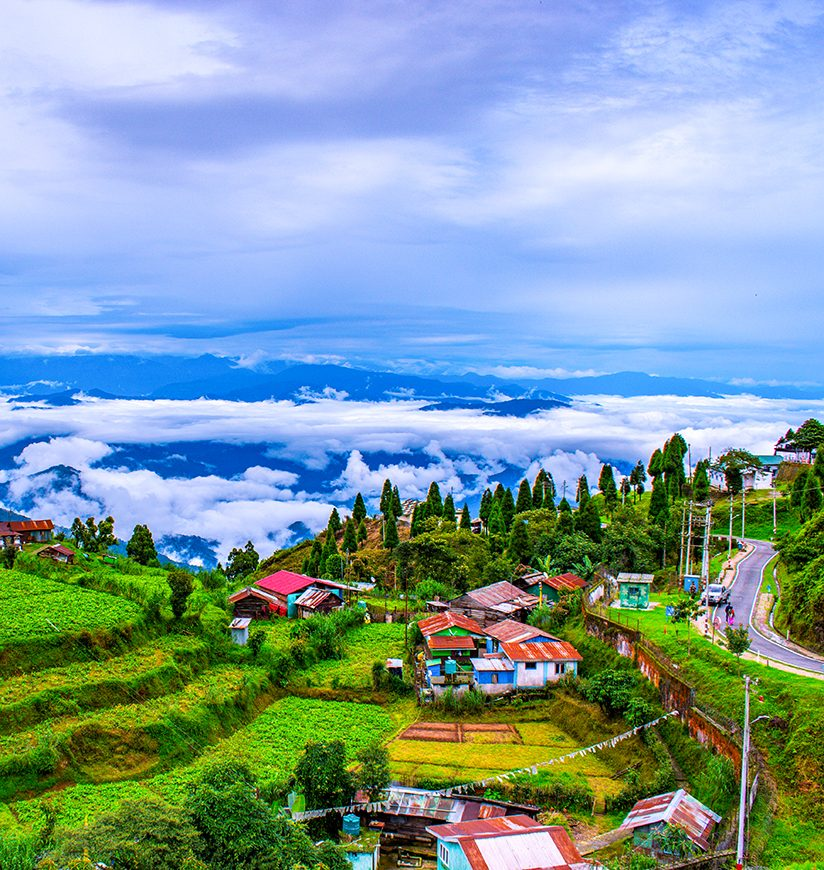
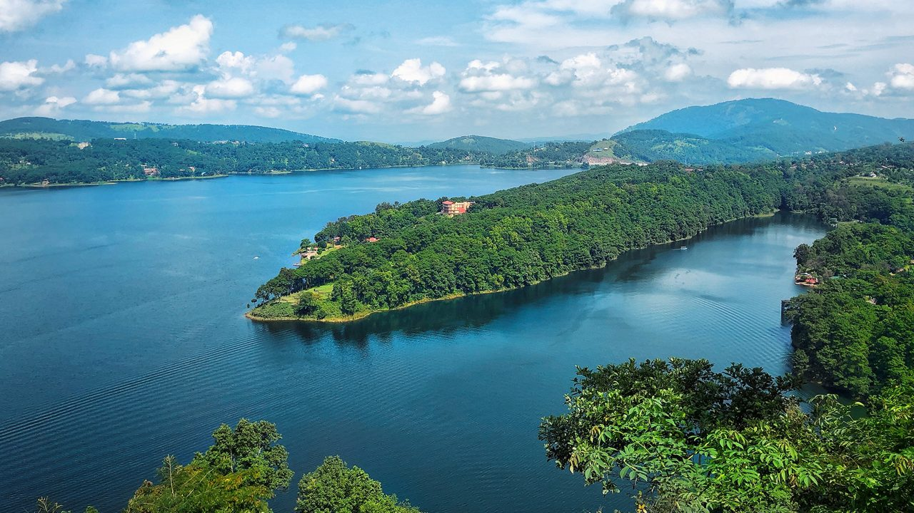
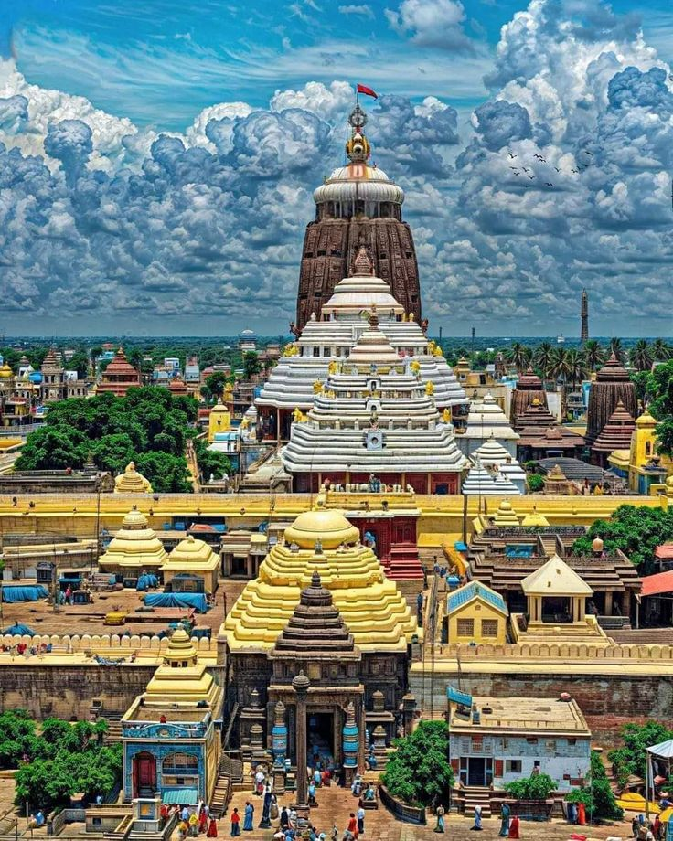

Place name: darjiling
Information: Mumbai, formerly Bombay, is the financial capital of India and one of the most populous cities. It is famous for Bollywood, historical landmarks, beaches, and street food.
Major Attractions:

Place name: shilong
Information: Pune is known as the “Oxford of the East” and was the seat of the Maratha Empire. It offers a mix of tradition, modern lifestyle, and pleasant climate.
Major Attractions:

Place name: puri
Information: Lonavala is a popular hill station famous for lush greenery, waterfalls, and chikki. It is located between Pune and Mumbai.
Major Attractions: